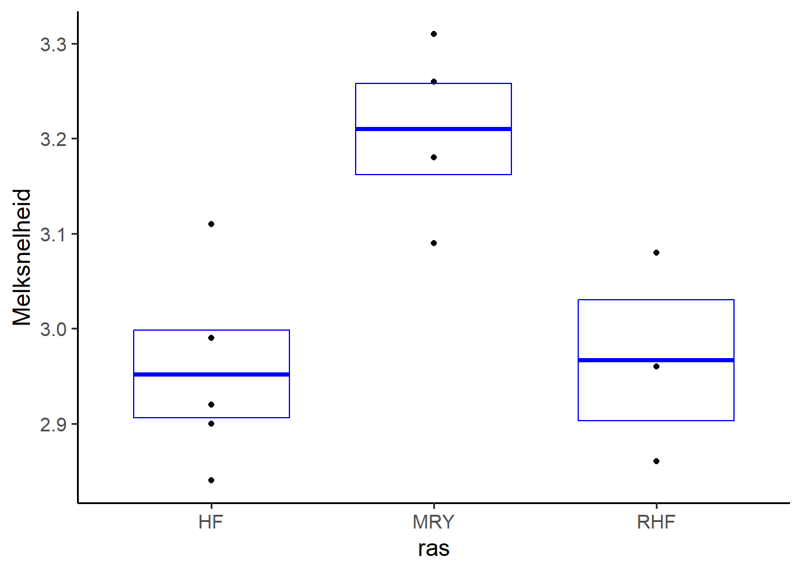

Hoofdstuk 6 Posthoctoets
Met een ANOVA kan je testen of er wel/geen effect is van een verklarende variabele. Als er een significant effect is, de H0 wordt verworpen, dan weet je wel dat er ergens een verschil zit tussen de verschillende groepen van de verklarende variabele, maar nog niet welke groepen onderling van elkaar verschillen. Daarvoor is een posthoctoets ontwikkeld.
Je voert een posthoctoets uit om te kijken welke groepen onderling significant van elkaar verschillen. Waarom niet gewoon een aantal t-toetsen uitvoeren (je vergelijkt immers telkens twee groepen onderling)? Twee redenen:
- Ten eerste omdat je op zoek gaat of en waar onderlinge verschillen zitten. En voor al die toetsen bij elkaar wil je de kans op een type-1-fout (ten onrechte H0 verwerpen) op 0,05 houden.
- Ten tweede omdat je dezelfde data gebruikt om verschillende toetsen uit te voeren.
In de loop van de afgelopen eeuw zijn er heel wat verschillende posthoctoetsen ontwikkeld en is het moeilijk door de bomen het bos te zien. We gebruiken een aantal simpele stelregels:
- Alle groepen onderling vergelijken:
- Bij ongeveer gelijke groepsgroottes: Tukey HSD.
- Bij ongelijke groepsgrootte: Bonferroni.
- Alleen behandelingen ten opzichte van een controlegroep vergelijken:
- De Dunnet’s posthoctoets.
Hoe voeren we die uit (als voorbeeld met de melkgiftdata, waarbij fit het resultaat is van de functie lm())?
Er zijn binnen R veel manieren om posthoctoetsen uit te voeren. Wij gebruiken binnen deze cursus de package emmeans, omdat we met deze package alle mogelijke posthoctoetsen kunnen uitvoeren. Wel zo gemakkelijk.
6.0.1 Tukey HSD
Als voorbeeld het effect van ras op melkgift:

Tukey HSD doe je op de volgende manier:
library(emmeans)
emmeans(fit, specs = pairwise ~ ras)## $emmeans
## ras emmean SE df lower.CL upper.CL
## HF 2.95 0.0459 9 2.85 3.06
## MRY 3.21 0.0513 9 3.09 3.33
## RHF 2.97 0.0592 9 2.83 3.10
##
## Confidence level used: 0.95
##
## $contrasts
## contrast estimate SE df t.ratio p.value
## HF - MRY -0.2580 0.0688 9 -3.748 0.0114
## HF - RHF -0.0147 0.0749 9 -0.196 0.9791
## MRY - RHF 0.2433 0.0784 9 3.105 0.0307
##
## P value adjustment: tukey method for comparing a family of 3 estimatesHet resultaat bestaat uit twee onderdelen:
- Het gemiddelde effect van iedere factor (officieel de estimated marginal means genoemd, weet je gelijk waar de naam van de package vandaan komt). Van ieder effect is ook de standaardfout en het betrouwbaarheidsinterval gegeven.
- Daaronder staan de contrasts. Dat zijn de onderlinge vergelijken. Het verschil wordt gegeven en er wordt een t-toets uitgevoerd waarbij de overschrijdingskans gecorrigeerd is. Standaard wordt de TukeyHSD-correctie gebruikt.
De bovenste en onderste vergelijking zijn significant (p<0.05). Dus MRY verschilt significant van HF en RHF, maar HF en RHF verschillen onderling niet significant van elkaar.
6.0.2 Bonferroni
Willen we nu een Bonferroni-posthoc uitvoeren, dan hoeven maar een argument toe te voegen:
emmeans(fit, specs = pairwise ~ ras, adjust = "bonf")## $emmeans
## ras emmean SE df lower.CL upper.CL
## HF 2.95 0.0459 9 2.85 3.06
## MRY 3.21 0.0513 9 3.09 3.33
## RHF 2.97 0.0592 9 2.83 3.10
##
## Confidence level used: 0.95
##
## $contrasts
## contrast estimate SE df t.ratio p.value
## HF - MRY -0.2580 0.0688 9 -3.748 0.0137
## HF - RHF -0.0147 0.0749 9 -0.196 1.0000
## MRY - RHF 0.2433 0.0784 9 3.105 0.0379
##
## P value adjustment: bonferroni method for 3 testsHet bovenste deel blijft precies hetzelfd, maar je ziet (kleine) verschillen in de p-waarde.
Deze test is iets conservatiever (voorzichtiger) dus de p-waardes zijn een fractie hoger.
6.0.3 Dunnet’s
Voor de Dunnet’s Posthoctoets gebruiken we als specs niet de pairwise, maar trt.vs.ctrl (*treatment versus control):
emmeans(fit, specs = trt.vs.ctrl ~ ras)## $emmeans
## ras emmean SE df lower.CL upper.CL
## HF 2.95 0.0459 9 2.85 3.06
## MRY 3.21 0.0513 9 3.09 3.33
## RHF 2.97 0.0592 9 2.83 3.10
##
## Confidence level used: 0.95
##
## $contrasts
## contrast estimate SE df t.ratio p.value
## MRY - HF 0.2580 0.0688 9 3.748 0.0087
## RHF - HF 0.0147 0.0749 9 0.196 0.9637
##
## P value adjustment: dunnettx method for 2 testsDe functie pakt automatisch de eerste factor (hier HF) als controle.
Met het argument `ref`` kan je aangeven welke factor je als controle wilt. In onderstaand geval willen we de tweede factor als controle:
emmeans(fit, specs = trt.vs.ctrl ~ ras, ref = 2)## $emmeans
## ras emmean SE df lower.CL upper.CL
## HF 2.95 0.0459 9 2.85 3.06
## MRY 3.21 0.0513 9 3.09 3.33
## RHF 2.97 0.0592 9 2.83 3.10
##
## Confidence level used: 0.95
##
## $contrasts
## contrast estimate SE df t.ratio p.value
## HF - MRY -0.258 0.0688 9 -3.748 0.0087
## RHF - MRY -0.243 0.0784 9 -3.105 0.0237
##
## P value adjustment: dunnettx method for 2 testsEr is nog een variant voor als je de laatste factor als controle wilt. Dan moet je een k achter ctrl zetten:
emmeans(fit, specs = trt.vs.ctrlk ~ ras)## $emmeans
## ras emmean SE df lower.CL upper.CL
## HF 2.95 0.0459 9 2.85 3.06
## MRY 3.21 0.0513 9 3.09 3.33
## RHF 2.97 0.0592 9 2.83 3.10
##
## Confidence level used: 0.95
##
## $contrasts
## contrast estimate SE df t.ratio p.value
## HF - RHF -0.0147 0.0749 9 -0.196 0.9637
## MRY - RHF 0.2433 0.0784 9 3.105 0.0237
##
## P value adjustment: dunnettx method for 2 testsOpdracht 6.1 posthoctoets
- importeer de package emmeans (via
install.packages("emmeans")) - Voer de juiste posthoctoets uit bij voorgaande opgave over silicium.